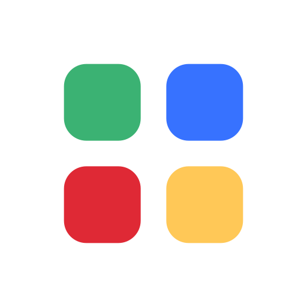

Installing the latest version
Keep Tui open — your game will restart automatically when finished.
You are the manager of The Little Plate. Hit the night’s cash target, keep reputation up, and never send an unverified allergy plate. Walkouts and unsafe food fail the shift.
When the oven dies, a shelf overheats, or an allergy ticket lands, the clock stops on a decision card. Every option states its price. Talk to staff from the Staff panel — messages land on the next tick, they do not teleport food.
New here? Play Training Shift first. It is slower, shorter, and walks the four moves that actually change the night. Dinner Rush is the scored benchmark — keep those traces separate.